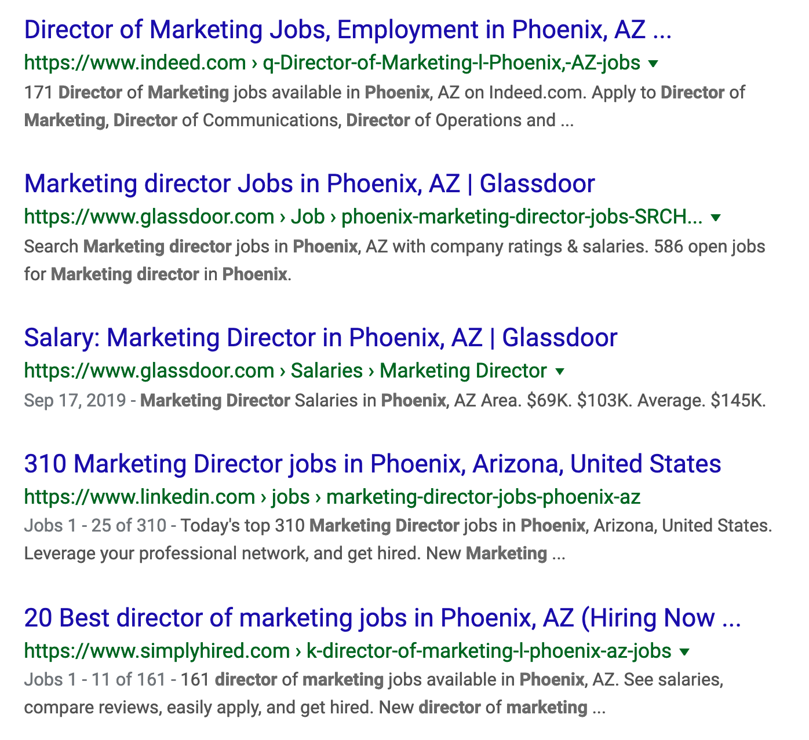
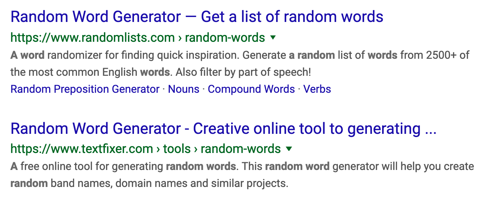

“
There’s never been a company that succeeded without sales.
Mark Cuban
Sections
Lesson #1
ü߆
Rethink everything you know about sales
People hate being sold to…
but we love to buy.
If you understand this dynamic, you can sell anything. As a freelancer, you will always have something to sell: your skills and style!
Your goal is to sell without your prospects ever thinking about it. How to do this? Start by mentally replacing the concept of “selling“ with the idea of “helping.” Focus on providing as much value as you can into the world. In turn, the world has a funny way of returning the favor.
No more going to networking events with your business card extended out in front of you. No more cold emailing asking if someone wants your services. No more direct selling! You’re now learning how to provide value, and how to capture value in return.
When to sell‚Äîand when to avoid it üö´
Gary Vaynerchuk spends most of his time giving value, not selling. He does this to position himself, so when he does have an opportunity to “sell” something, it doesn’t come off salesy because he’s been giving—he’s been building rapport and authenticity.
His book about this method, Jab, Jab, Jab, Right Hook, compares sales to boxing: a pro boxer doesn’t climb into the ring and throw a right hook immediately. He starts by getting a feel for his opponent, and delivering small jabs that steadily reduce the foe’s resistance.
That same philosophy applies in business. The idea here is that, if you go into a sale looking to sell, you’ve already lost. “Jabbing” as a freelancer means helping; it means giving value.
Always aim to provide value first.
As Gary Vee explains, when your energy is focused on disproportionally providing value, you will win. So what are some ways you can do that?
- Writing & sharing a blog post that helps your potential clients do something
- Making an intro for two people who stand to benefit from the connection
- Giving someone a ride to an event
- Speaking at events for free (if you have something to say)
You might think these kinds of things deserve a price tag, and you could be right—but this is 2019, and people do business differently in 2019. It’s about trust and relationships, and the best way to build that is by providing massive value and asking nothing in return. Growing your trust first builds your clout far faster than going around trying to bag a quick client. Remember, this is just the foundation.
You need to jab a few times before you go in for the killer right hook—the ask you want to make: “Hire me to be your ______.” If you’ve been helpful, if you’ve built rapport and a relationship with someone, you’re far more likely to “land the right hook.”
In Gary Vee’s own words, the JJJRH method from your childhood:
My favorite analogy to illustrate the difference between jabs and right hooks are cartoons. When the Transformers cartoon was on Saturday mornings, you would tune in and watch for free. You’d watch the cartoons and not have to pay a dime. But when the movie or new action figure or toy came out, you went and paid for that. Cartoons were the jabs that pulled you in so you would then pay for the movie or toy.
So, when do you throw a right hook?
The best time to throw a right hook is when someone gives you permission to. Seth Godin coined the term “permission marketing” beautifully:
Permission marketing is the privilege (not the right) of delivering anticipated, personal and relevant messages to people who actually want to get them.
You’ve been so helpful to them that they want to hire you when it’s time to hire a freelance writer, designer, etc. Of course, this doesn’t mean everyone you help will come flocking. More realistically, you’ll need to stay top-of-mind and be confident in making a strong ask that “lands” properly.
Let's say you have a book to sell, and your internal goal is to sell 50,000 copies. Let’s compare a couple versions of an email blast you could send to your list:
Hey everyone,
I just published a book called Climbing Mountains With Only One Hand. Please buy it so I can continue living in Zion and not have to work in retail anymore!
Rock the One-Handed Climber
Hi {{first-name}},
Thanks for your continued support over the years! I’m excited to announce that I just published a new book, Climbing Mountains With Only One Hand. It’s part personal success story, part rock climbing lessons.
If you’ve enjoyed my blog & newsletter content about rock climbing and other adventures, you will probably love this book, too. You can buy it on my website, with discount code {{coupon-code}} for being such a loyal supporter!
Please let me know if you do; I would love to hear how you liked it.
Cheers & safe travels üñêÔ∏è
Rock the One-Handed Climber
Remember: the reason you can make this ask is because you’ve been building your clout and goodwill for the last several months, and these people, in a way, feel like they owe you something. Some will click the link for that very reason. Playing the long game works in sales. Patience can be hard to keep up, but patience pays.
Example of a great right hook in action
Scott Kupor is a venture capitalist at a16z, one of the most sought-out VC firms in startup history. He spends a great majority of his professional time providing value through his role. Now, since he published a book recently, he’s actively throwing a right hook: asking for reviews on Amazon.
Lesson #2
Back to top üîé Back to top
How to find your ideal clients online (and in real life!)
Because over 2.65 billion people have online profiles these days, it’s pretty likely that the types of clients you want will be listed somewhere. The important thing is to know how.
There are countless tools and tricks for finding people online and in real life. Of course, any smart freelancer’s goal is to find specific people, which requires defining your client persona(s). Doing that well includes making an educated guess about where those kinds of people spend time online and in the real world.
Once you have a solid hypothesis for where to find your potential new clients, it’s time to gather your tools and techniques for finding them. You can find potential clients in several ways:
Company data platforms
These platforms are far less famous, but can provide some uniquely valuable information to help you decide which companies to target.
Finding potential clients on Crunchbase
At PubLoft, we used Crunchbase Pro to discover long lists of companies based on various combinations of search filters, one of which we’ll share with you here:
This specific set of criteria was especially useful for several reasons. For one, we wanted to make sure we were working exclusively with American companies in the “direct to consumer” (D2C) space—brands like Dollar Shave Club, ScentBox, and Tuft & Needle. That’s because we learned that D2C companies have to be very careful with how much they spend on customer acquisition costs (CAC), so they’re likely to invest in long-term strategies that cost little to nothing once they start working—channels like organic search ranking, possible with search engine optimization (SEO).
We also chose to work with companies that had raised enough money recently enough to be able to invest in content marketing, our main hustle. Finally, the smaller the team, the more likely they had funds to allocate and a dire need to outsource certain activities, like content creation.
This group of filters was just one of many we used, and we made sure we had a highly specific message for each type of company. Remember—the more personalized you are in your approach, the more people will feel that you’re a real human trying to build a real relationship, and the more success you’ll see.
Finding clients with Google
Naturally, Google is one of the most powerful ways to find anything and anyone online—when you know how to use it. Here’s a quick primer on some basic Google-fu that you can use to narrow down your searches.
Searching specific websites
Google lets us search specific sites‚Äô public content simply by typing site:linkedin.com SEARCH TERM. This is often a better way to find content or profiles than the site‚Äôs own search function, since Google has arguably the best search known to humankind. üò±
We can repeat this kind of search inside of website subdirectories, too. Searching site:gigloft.com freelance will return every instance of the word “freelance” on our website, but site:gigloft.com/teaches/ freelance will return only the instances of “freelance” on URLs that contain “gigloft.com/teaches/”. (Meaning our freelance guides, like this one!)
Excluding search terms
Googling the term marketing director phoenix is a good way to return pages that must contain both “marketing director” and “Phoenix,” but we mostly get job listings and salary data:
Adding -job to the end of your search, we can filter out most of the job stuff to leave only profiles or pages talking about marketing directors in the Phoenix area (below the paid job listings):

Requiring specific words or phrases
We can use quotes around terms to make sure those words are included. For example, the search some random search term returns a bunch of random results that sort of match the words “random” and “search” or “term.”
But if (for whatever reason) you were looking for webpages that exactly matched that query, you’d use “some random search term” in quotes, and get results that contain that exact phrase:
Searching with AND / OR operators
The AND operator is useful when you want to force-combine two terms that normally don’t go together. By now, Google has pretty much figured out that freelance cambodia is the same query as freelance AND cambodia so it’s rarely necessary to use AND anymore. Search either of these, and we get fairly similar results—jobs and freelancers located in Cambodia.
The OR operator is still very useful—it returns any page that matches either “freelance” or “cambodia” in whichever order those pages would rank normally. Search freelance OR cambodia and we get Cambodia-specific websites, as well as freelancer.com at roughly result #5 at the time of this writing. These sites have nothing to do with each other, and this can be a useful trick when you want to compare search engine rankings of different pages that don’t normally go together. Try it if you’re curious!
Finding potential clients’ email addresses
If you’re smart, you’ll use email in addition to social, not instead of it. Business people live in our emails, sometimes to a fault, and a well-crafted, well-timed email can sometimes be the perfect way to get on someone’s radar to start a conversation. Remember, we’re always optimizing to start a conversation, rather than trying to get a client right off the bat. We must make it easy for them to respond, and let the conversation develop naturally.
Tools to find email addresses
Of course, in order to reach out via email we’ve got to find those email addresses. Tools like Hunter let us find email addresses from websites extremely quickly, and even try to guess the address if it can’t find someone’s email specifically using the “most common pattern” logic:
Its results are not always perfect, of course, but they’re a great start to finding—or guessing—the right person’s email address.
Another great tool is GetProspect, which works on LinkedIn and is free for the first 100 emails per month (at the time of this writing), plenty for a solo freelancer growing her client base.
Tools to verify that email addresses won’t “bounce”
If we send too many emails that bounce, meaning didn’t have a valid recipient, our email addresses can get flagged as spam—and you do not want that. It basically ruins your privilege to send email.
Most hunting tools like Hunter also verify emails, but you can also use more specialized software like Neverbounce to take advantage of additional features like list segmentation.
Tools to send email efficiently
Once you’ve got a list of verified emails, we first start by sending cold emails manually. Get a feel for the process of writing a cold email, and try to be personalized in your reach-outs. For busy business people, there’s nothing more eye-catching than receiving an email that speaks directly to us. If it drops a ton of value, even better.
Only when we’ve learned which reach-outs work best can we begin to scale our outreach efforts with mass email senders like Mailshake. The most valuable feature for solo freelancers is the ability to schedule automatic follow-ups. This way, we don’t have to constantly follow up… and follow up… and follow up—which is crucial to success with email outreach. More on that below.
Finding potential clients in real life (IRL)
Finally, the big doozy: real-life networking!
First, remember that it’s never required to put yourself in social situations. If you’re the type of person who gets serious anxiety from social interaction, skip it. Stick to online—mega-introverts and people with social interaction disorders can just as easily succeed with online networking only.
With that said, if you‚Äôre nervous or uncertain about networking, but are ready to push the bounds of your introverted self‚Äôs comfort zone, you totally should. üòä Brandi Sea shares a healthy way for creatives to think about networking:
Networking is just hanging out with people you already have something in common with and getting to know each other.
Since the dawn of time, human beings have engaged in in-person interaction, and the core benefits remain just as true today as they were when we communicated with grunts and gestures only. Don’t let the Internet’s ease of access make you lazy: spend a significant portion of your time out of the house.
There’s something about real life interactions that just takes the cake. You get to shake hands, feed off the other person’s energy and emotions in real-time, take advantage of nonverbal cues, and so much more. That’s because, as Laura Vanderkam explains, the science of in-person communication goes back to our roots:
Human beings had little ability to communicate with those who weren’t physically close to them until the past century, and our brains don’t evolve as rapidly as technology.
By taking advantage of the benefits of in-person interaction, we can have better interactions, conversations, and outcomes in our freelance careers.
Top places to find your ideal clients in real life
Again, the biggest thing to ask yourself in this case is, who are your ideal clients? Think critically about your audience, and come up with a list of interests and activities they enjoy. Tip: start by listing your favorites, and perhaps your ideal clients share those interests. üòâ
Niche events
Look up niche events that your clients might attend, and attend them. You can meet tons of design leaders by going to Design Week, a UX design meetup, etc. You can meet motivated content managers and overwhelmed business owners trying to learn at marketing conferences. The more you know about your target client, the easier it will be to find them.
Popular places to work remotely
More and more people work remotely. Look up the hottest coffee shops in your area, go work there, and be open to interaction—opportunities to meet the regulars. Make a list of every coworking space in your area, and try to get a free day pass to each one. Just remember that these are places where people are trying to work—try to avoid interrupting or bothering them. Find organic opportunities to interact, like when someone is ordering coffee or looking for an outlet.
Your own hangout spots
What do you do when you’re not at home? Enjoy rock climbing or lifting weights? Don’t just show up at the gym with your earbuds in and avoid eye contact. Again, find organic chances to talk with others. Learn their names. Become someone they say “hello” to when they see you.
Push yourself to spend time in various kinds of places and interact with the other people there (without interrupting or bothering, of course).
With these various places to start, you’ll begin learning which kinds of people spend time in each, and who is most receptive to new connections and conversations.
Do this
üëá
Lesson #3
Back to top üö® Back to top
How to stand out and earn your prospects’ attention

Start by being interested, not by trying to be interesting.
This idea comes worded this way by Ty Bennett, but has been true since the dawn of humanity.
Think of it as talking less, and listening more. Bennett explains it this way in his aptly named article Be Interested, Not Interesting:
Influence comes from making it about others. When we are genuinely interested in someone else, they will love us for it.
A superpower in life is being curious—asking lots of thoughtful questions. We should always be interested in others, and not just because it leaves positive impressions on the people we talk to.
The reason this works is that people love talking about themselves. When you’re eager to learn and listen to others share their life story or elevator pitch, they’ll leave the conversation feeling like you were very interesting. Something inside them may feel like they owe you.
Learn to have great conversations
Listen to Celeste Headlee share 10 rules for having better conversations. The meat & potatoes starts at 4:00 , and pay special attention to what she says around 5:27 regarding true listening.
I’ll underscore what I believe to be the most important takeaway. Celeste says it herself—it all boils down to the same basic concept: being interested in people.
True listening requires a setting aside of oneself.
So let’s talk less about ourselves, our own companies or products or services. Instead, let’s ask questions, be curious, and make friends, not connections.
Learn the art of social selling.
The concept behind social selling is nothing new. Christina Newberry defined it this way for the Hootsuite blog:
Social selling is the art of using social media to find, connect with, understand, and nurture sales prospects. It’s the modern way to develop meaningful relationships with potential customers so you’re the first person or brand a prospect thinks of when they’re ready to buy.
As you can see, the only new thing about social selling is where it takes place: on social media. The idea is that, since you and everyone else already have social profiles on many platforms, you might as well use them to your advantage.
When we put ourselves out there by posting regularly—and, equally importantly, engaging on others’ content—we start to become part of the conversation in more ways than one.
In Adam Mosseri’s own words, this is how Facebook thinks about content:
Today we use signals like how many people react to, comment on or share posts to determine how high they appear in News Feed.
With this update, we will also prioritize posts that spark conversations and meaningful interactions between people. […] These are posts that inspire back-and-forth discussion in the comments and posts that you might want to share and react to – whether that’s a post from a friend seeking advice, a friend asking for recommendations for a trip, or a news article or video prompting lots of discussion.
While each platform’s algorithms are unique, they share one important, common goal: learning to prioritize the content and content creators it deems are most valuable to its users. Therefore, your job is to be valuable. On social media, that means posting meaningful updates (not just the stuff you think will get the most likes), leaving insightful comments on others’ posts, and having 1-to-1 conversations in private messages.
You’ll notice that the people you engage with most will begin to appear more often in your feed. They’ll also be more likely to see your content in their feed—which keeps you top of mind, a key result in the personal brand category.
Hopefully now you’re starting to see why social selling is especially valuable to freelancers building a client base. Check back soon for additional resources on this topic!
Focus on what you can control.
If you’re doing lots of outreach and struggling to get a response, it might be because you’re coming off too eager; “thirsty,” as the kids say: too eager to get something, desperate.
Indeed, this is a killer for freelancers: when you come off too eager in your outreach process, it turns people off. Just like in dating, this happens because we wan’t what we can’t have, and things that come easily we tend to value lower.
Your potential clients value you less if you seem overeager.
Listen to Gary Vaynerchuk explain this to his right hand man, D. Rock, and share what he should do instead to get brands to work with him:
The core principle is this:
Make the content as if [they were already paying you], and watch the bees come to the honey.
Whatever you’re in the business of—whether it’s writing, designing, programming—you can earn your ideal customers’ attention by doing excellent work about them.
You can make funny, relevant content about companies in an industry; you can design product onboarding content that helps them get new users; you can build a Chrome extension that helps their users get more value.
Just get excited about them, and flex your craft.
This type of strategy is hard to execute at scale, but in the early stages of building your creative career, you can get away with doing things that don’t scale.
Do these to succeed
üëá
Lesson #4
Back to top üì´ Back to top
️The ancient art of following up… and following up…

Many people don’t realize this, but the key to making sales isn’t in the initial outreach. It’s in the follow-up.
Almost every customer PubLoft ever got was from a follow-up email, sometimes even 6+ times. The ultimate question now is:
Why is following up the killer activity, and not the initial reach out?
The reason to follow up is that your prospects are probably really busy, and didn’t plan on talking to you today. When a CEO or manager wakes up and starts their day, they usually plan it—and that plan does not include you. When you reach out on email or LinkedIn introducing yourself, they aren’t going to want to engage immediately.
Additionally, chances are you aren’t the only one sending outbound messages to them. Other freelancers and salespeople could be targeting them, so whenever she gets one of those messages, she immediately rejects them. So how do you break through this wall?
Follow up! Most people don’t, so when you do, people notice. And they respond.
Renowned sales trainer Grant Cardone explains:
Eight out of ten sales, from all companies, were made between the 5th and the 12th contact.
Another example of the phenomenon is outlined in this short listicle by Amanda Abella:
I recently got a lucrative writing deal after following up with a prospect for months. It’s not that they didn’t want to respond, it’s that they were up to their eyeballs in other projects and some things took a back seat. I’m pretty sure that the only reason I got the gig, and therefore increased my revenue, is because I was so consistent with following up.
By now you hopefully understand the importance of following up. It’s about getting the attention of the person you’re targeting, sometimes which will take months. Remember, the downside of not following up is:
- They forget about you
- Someone else earns their attention
- You lose the deal
Case study: San Diego Chargers
In the beginning of this talk, CEO Kyle Whissel talks about how the San Diego chargers (and every other NFL team) trains thousands of hours a year, in all seasons, just to prepare for 16 games that last 2–4 hours. He suggests that the same methodology be applied to prospecting. Build out your tool belt so much that you know what to do in every situation.
Just like the right guard for the Chargers knows what to do during a blitz or a stacked defense, you should know how to follow up based on the behaviors your prospect is exhibiting.
Things to think about when following up
Be persistent, but not annoying
Following up is not annoying your prospects with a “just following up here” 20 times in a row. Each follow-up should be a value add, and it shouldn't even feel like a follow-up to the prospect.
Develop your cadence
The way you think about when you send your follow-up emails and how much time in between each one is what we call cadence. Rebecca Matias dives into sales cadence examples and lessons:
A sales cadence is simply a timeline of sales activities and methods reps follow to engage leads. For example, if one of the starting points in your sales conversion funnel involves a lead filling out a form on your site, the steps you take in order to contact that prospect and get him to agree to a face-to-face meeting make up your sales cadence.
In this case, the sales cadence tells you when and how to contact the lead after completing the form (e.g., email on day 1, call on day 2, send a follow-up message on day 3, etc.). Find out how you can generate leads for your business.)
There are a ton of different cadences. All the CRMs and sales tools teach their own, but you’re going to need to pick the on that’s best for you, whether it’s more aggressive or more laid back (or somewhere in the kiddle).
The cadence from Close.io’s book, The Follow Up Formula, is a great example:

There are hundreds of examples of cadences if you look them up online, but if you want some place to start, I’d start with this one. Their CEO Steli Efti is known for putting out some of the best sales content out there.
Learn to turn a “no” into a “yes”
Sometimes, a simple bit of persistence or gratitude can change the whole outcome. Here’s a great example:
Remember to add value
You always want to make sure that you’re adding value ion your follow-ups and you’re not just bumping an email you sent a few years ago. Emily Bauer published some examples of great follow ups after you send the initial message. And here is one strategy HubSpot talks about:
In your follow-up email, send one or two relevant materials from your own company’s content, such as a long-form content resource or recent blog article that addresses a challenge that you think they might be experiencing. Make it clear that you’re available to speak about their goals and that you have expertise in specific areas that matter to them. 
At the end of the day, you need to pick the cadence that will work with you. We suggest testing and iterating on your cadence until you have one that feels right and yields great results. Some more places to find inspiration for cadences are this LifeHack article, and this Muse article.
How to remind yourself to follow up
If you’re sending dozens of messages a day, it’s going to be hard to remember to follow up with everyone. This is why you need a tool to help you set reminders for each contact. Usually, this is the job of a CRM.
If you don’t have a CRM, we suggest you start with HubSpot's free version and get used to the CRM life and work up from there. They also have a free extension that you can install inside your Gmail which makes setting follow up reminders super easy.
Good things happen to those who follow up. To finish off the lesson, read this article on how our cofounder Mat Sherman kept following up with an angel investor, all the way to winning an investment from him! Here’s an excerpt:
1.5 years of hustling my ass off and staying persistent finally got me to a yes. Persistence is everything. Screw talent. Screw luck. If you’re persistent enough, you’ll make your own luck and people 10x more talented than you will want to be part of that luck.
If this doesn’t show you the power of following up, nothing will. Now, dive into one of our missions on following up so you can get tactical.
Do this now
üëá
Then begin repeating these
üëá
until you get a verbal “yes.”
Lesson #5
Back to top üèÜ Back to top
️The final stretch: how to negotiate & close deals!
Congrats on getting a potential client interested! When it comes down to the money conversation, remember one thing:
️You’re not trying to sell them on your service.
If you’ve done your job thus far, they’re already sold on the value. Now your job is to get them to actually close: pay you money and start the project.
You will almost always get the first “close” (verbal confirmation) during an in-person or virtual meeting/phone call—very very rarely by email or text, and only if you have a high level of trust and successful communication with the other person. At that point, remember: they haven’t closed yet! I’ll say it again.
A new client that has verbally confirmed is not closed yet. Closing means paying you money. So how do we get there?
You’re not trying to sell them on your service—if you’ve done your job thus far, they’re already sold on the value. Now your job is to get them to actually close: pay you money and start the project.
️Focus on how you’ll solve their problems
Having great sales calls is an art that you can control.
Think about the last time someone tried to sell you something. Perhaps it was a store associate trying to upsell a piece of clothing, a recruiter working hard to convince you to take a job, or a sales rep telling you all about their online platform and why you should spend money to be on it.
Great salespeople (and freelancers) turn boring, “going nowhere” calls into exciting, motivating calls by asking good questions and gaining a deep understanding of the client’s needs and expectations. They also inject their warmth and personality into the experience, making it feel less transactional and more like a real relationship is developing—because, when you do this right, it is.
️Know when & how to negotiate
Usually when someone is trying to negotiate pricing, it’s because they want to spend as little of their budget as is necessary. (Understandable, since we all love saving money.) Sometimes, however, it’s for another reason. It could purely be a game they like to play, or a lack of confidence in the results you‘ll produce.
Regardless, you’ll want to know.
Seek to understand why they’re trying to pay less. Ask questions like:
“Is this above your current budget?”
“Would it be helpful to break this up into a couple more installments?” 
Ultimately, your job is to get them to say “yes” to something that you both are happy with—even if that is a much smaller amount than you’d originally anticipated.
Deals only work sustainably if they’re win-win. This means neither person feels like they’re getting the “short end of the stick.” You should feel like you’re earning a fair rate for the work you’re doing, and your client should feel like they’re getting fair work for their money. Be super honest with yourself and your client about this, and you will almost always leave conversations feeling good about yourself—even when the deal didn’t work out.
The philosophy here is that it’s better to walk away from a bad deal than to try to force it through. You don’t want to create resentment in your relationships—it’ll only lead to constant revisions and dissatisfaction for everything you do.
Therefore, when you’re confident in the quality of work you deliver, be willing to take a smaller project and prove your worth. However, never negotiate your rates.
Instead of working for a lower rate, and undermining your value to the client, take this advice from yourrate.co by Mark Hendricks:
See how you can limit the project scope while still solving the problem.
(You‘ll need to enter your own numbers to see this tip + others.)
In other words, if your client can’t spend as much as the project will cost, it’s completely fair to remove certain pieces of the project that aren’t immediately necessary to its end goal. Educate your client on how these changes will affect both budget and outcomes, and let them decide what’s best for them.
If they need what you do and are convinced you‘re the person to work with, they’ll find a way to make something work.
️Close with class.
Remember the lesson above on following up? Yeah, you’re still not off the hook. Even when a client gives you the verbal confirmation, the exciting “Okay, send me an invoice!” keep in mind that you haven’t gotten paid, yet.
Your next step is to send an invoice that clearly itemizes costs (breaks down the amount by services rendered) and gives the client an easy way to pay online. I can’t stress this enough: if it’s your first time taking a payment online, test the invoice link yourself, and make sure it’s got a way to pay by card, bank account, or PayPal/etc. Otherwise you’re just asking for them to ghost you.
Then, once you’ve sent the invoice, keep following up every 2-3 days until it’s been paid. Again—business leaders are busy, and will often forget to pay invoices when the project isn’t absolutely burning a hole through their priorities. Also, if you’re not selling directly to the CEO of a smaller company, the budget may require approval from one or more additional people in the organization.
Keep sending gentle reminders with the link to the invoice. Ask if there’s anything holding them back from getting started. Make jokes, if that’s your personality. Keep things lighthearted and you won’t seem desperate for the money.
(Meanwhile, keep working your other leads. Never allow yourself to rely on a single client’s payment coming in. Assume they will take a long time to close.)
Finally, once you‚Äôve received payment, message them as soon as possible with a ‚Äúthanks‚Äù¬†and an explanation of what happens next! Congratulations, you just got paid. üëèüòÉ
Was this guide valuable to you?
If so, you might love our full program.
Meet successful entrepreneurs, get personal coaching, and access 10x more member-only content like this.
Learn more